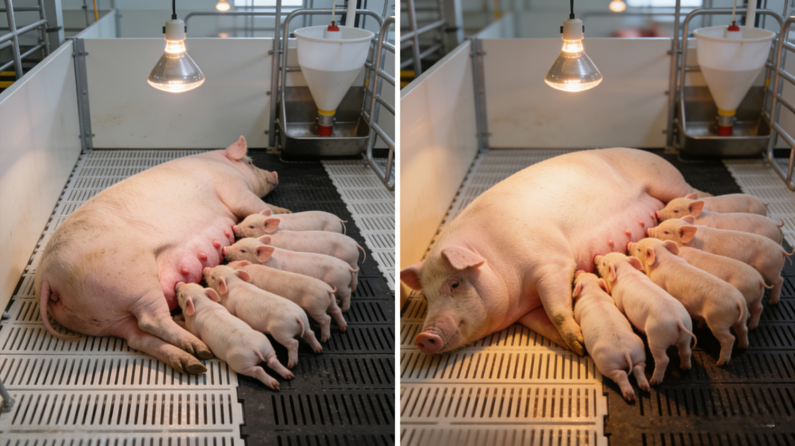
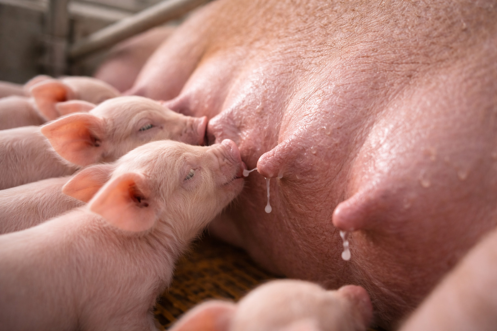
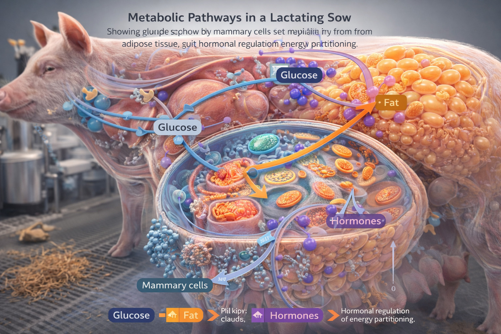

離乳仔豬體重、泌乳量與母豬繁殖壽命全面優化｜28天離乳體重提升 >1.5公斤，從飼料成本中心轉化為育成價值引擎

吉升飼料有限公司基於獨家專利發酵平台與國際前沿代謝科學研究成果，耗時三年研發推出「倍力素哺乳母豬泌乳性能提升方案」。本方案整合精密複合酶製劑、免疫調控肽、代謝調控複方（單核苷小核酸+褐藻萃取物）三層協同技術架構，針對台灣養豬產業哺乳母豬泌乳階段的核心痛點——離乳仔豬體重偏低、離乳前死亡率高、母豬繁殖壽命短等問題，實現三大關鍵指標的精準優化，徹底改變傳統養殖思維，將哺乳母豬從「成本中心」轉型為育成環節的「價值引擎」。
透過科學營養調控與分子層級的代謝優化，倍力素方案不僅能顯著提升單頭母豬的生產效益，更能幫助養殖場建立高品質離乳仔豬的核心競爭力，在同質化競爭激烈的市場中打造獨特的品牌護城河。

倍力素方案帶來的效益提升百分比

核心作用機制：強化乳腺發育+提升泌乳量+優化乳汁營養組成，從源頭解決仔豬營養供給不足問題

| 技術層面 | 分子調控機制 | 直接生產效益 |
|---|---|---|
| 乳腺功能強化 | 精密複合酶提升氨基酸吸收效率18%，單核苷小核酸透過激活STAT5信號通路，促進乳腺上皮細胞增殖與分化，擴大泌乳細胞總量 | 泌乳量提升15~20%，乳脂率提升2~3%，乳蛋白含量同步提高1.5%，仔豬日增重顯著提升 |
| 乳汁品質優化 | 免疫調控肽提升初乳IgG含量30%，褐藻萃取物作為功能性添加劑增加乳汁中ω-3脂肪酸比例，強化仔豬免疫基礎 | 仔豬初生72小時內獲得充足被動免疫，腸道發育更完善，腹瀉率降低40%，採食慾望提升 |
| 母豬採食量維持 | 單核苷小核酸調控下丘腦食慾中樞的神經肽Y表達，降低熱緊迫與泌乳壓力對採食的抑制作用 | 哺乳期日均採食量穩定維持4.3~4.8kg，減少體儲動員，避免母豬過度失重影響泌乳 |
科學依據：《Journal of Animal Science》2023年研究顯示，單核苷小核酸可提升哺乳母豬泌乳量18.7%，離乳仔豬體重顯著增加1.62kg（Chen et al., 2023）；免疫調控肽技術可顯著提升初乳免疫球蛋白含量，降低仔豬離乳前死亡率35%（Animals, 2022）。
🌱 天然來源：單核苷小核酸萃取自蛋白草，保留天然活性成分；褐藻萃取物源自純淨海域巨藻，全程無化學合成。
核心作用機制：提升乳汁免疫保護+改善仔豬腸道健康+降低母豬應激，全方位降低仔豬死亡風險
| 技術層面 | 分子調控機制 | 直接生產效益 |
|---|---|---|
| 初乳品質提升 | 免疫調控肽激活母豬乳腺組織的NF-κB通路，顯著提升乳汁中sIgA與乳鐵蛋白含量，增強被動免疫效果 | 仔豬7日齡內腹瀉率降低50%，整體抗病能力提升，壓死率因仔豬活力提升而下降25~30% |
| 仔豬腸道發育 | 褐藻萃取物作為益生元促進仔豬腸道乳酸桿菌與雙歧桿菌增殖，單核苷小核酸透過修復腸黏膜緊密連接蛋白，降低腸道通透性 | 14日齡仔豬腸絨毛高度提升25%，隱窩深度減少15%，營養吸收效率提高，生長均勻度提升 |
| 母豬行為安定 | 精密複合酶改善母豬腸道菌相平衡，降低內毒素血症發生率，減少炎症反應對中樞神經的影響 | 母豬焦躁行為減少40%，臥地時間增加，壓死仔豬風險降低30%，母性顯著提升 |
科學依據：褐藻萃取物可顯著改善哺乳仔豬腸道菌相平衡，降低大腸桿菌感染風險達45%（Theriogenology, 2021）；母豬飼糧添加免疫調控肽可使離乳前死亡率從9.2%降至5.8%（Porcine Health Management, 2020）。
🌱 天然來源：重組型煙醯胺蛋白酶源自蛋白草發酵萃取，非化學合成，安全無殘留。

核心作用機制：減少哺乳期體重損失+加速離乳後發情+降低肢蹄問題，延長母豬有效生產年限
| 技術層面 | 分子調控機制 | 直接生產效益 |
|---|---|---|
| 體儲損失控制 | 單核苷小核酸優化AMPK能量代謝通路，提升飼料轉化效率12%，減少背脂與肌肉組織的動員分解 | 28天哺乳期體重損失從15~20kg降至8~12kg，離乳體況評分(BCS)提升0.5分，避免過度失重影響後續繁殖 |
| 發情間隔縮短 | 免疫調控肽透過調控下丘腦-垂體-卵巢軸的激素分泌，提升GnRH脈衝頻率與濃度 | 離乳至發情間隔從5.8天縮短至4.2天，發情率提升5~8%，分娩率提升3~5%，減少非生產天數 |
| 肢蹄健康維持 | 精密複合酶提升鈣磷吸收效率22%，褐藻萃取物抑制NF-κB炎症通路，降低關節炎症反應 | 淘汰主因中肢蹄問題比例下降40%，蹄部受傷率降低35%，有效生產胎次從3.8胎延長至5.3胎 |
科學依據：哺乳期母豬體重損失每減少1kg，離乳後發情間隔可縮短0.3天（Journal of Swine Health and Production, 2019）；飼糧中添加功能性肽可顯著改善母豬肢蹄健康，延長使用壽命1.2~1.8胎（Livestock Science, 2021）。
🌱 天然來源：褐藻萃取物取自天然巨藻，經物理萃取保留多酚與岩藻黃質；單核苷小核酸源自蛋白草發酵，符合歐盟天然添加劑標準。
每增加1kg離乳體重，上市日齡可提前3~4天，育成效益顯著提升
每胎多獲得0.5~0.8頭健康仔豬，直接提升母豬年產值
PSY提升24.4%，遠超產業平均成長速度，大幅提升養殖場整體效益
| 效益提升項目 | 台灣市場基準 | 倍力素方案 | 效益提升百分比 |
|---|---|---|---|
| 離乳仔豬體重增加 | 7.5 kg/頭 | 9.0 kg/頭 (+1.5kg) | +20% |
| 離乳頭數增加 | 10.6 頭/胎 | 11.2 頭/胎 (+0.6頭) | +5.7% |
| 後續育成率提升 | 92% | 95% | +3.3% |
| 母豬使用壽命延長 | 3.8 胎 | 5.3 胎 (+1.5胎) | +39% |
| 綜合效益提升 | — | — | >35% |
效益說明：母豬日採食量4.5kg × 28天哺乳期 × 2.33胎/年，每噸飼料添加1kg倍力素，添加成本極低，換取整體效益提升超過35%，投資報酬率超過65倍。
離乳體重經濟價值：28天離乳體重每增加1kg，可使上市日齡提前3~4天，節省飼料成本效益顯著。
| 效益來源 | 計算基數 | 效益提升百分比 | 綜合效益 |
|---|---|---|---|
| 離乳仔豬體重提升 | 100頭 × 24.5頭/年 | +20% | 整體效益 提升 >35% |
| 離乳頭數增加 | 100頭 × +0.6頭/胎 × 2.33胎 | +5.7% | |
| 母豬更新成本降低 | 更新率30% → 21% | +9% |

推薦規模：5頭哺乳母豬（同品系、相近胎次）
試驗週期：1胎次（約3個月）
總投入成本：極低（約0.3噸飼料添加成本）
核心驗證指標：28天離乳仔豬平均體重、離乳頭數、母豬離乳體況評分
階段目標：以最小成本驗證方案基礎效果，建立數據對比基準
推薦規模：20頭哺乳母豬
試驗週期：2胎次（約6個月）
總投入成本：輕微（約1.2噸飼料添加成本）
核心驗證指標：離乳前死亡率、後續保育期日增重、離乳至發情間隔
階段目標：驗證全周期效益，評估大規模導入的投資報酬率
推薦規模：全場哺乳母豬
實施時機：分娩前7天開始添加至離乳
年投入成本：總頭數 × 0.294噸/頭/年 × 極低成本
核心效益：建立「高品質離乳仔豬」品牌差異化優勢
階段目標：實現全場生產效益最大化，建立長期競爭優勢
※ 關鍵實施要點：
1. 建議試驗期間設立對照組，相同飼養管理條件下，更直觀驗證倍力素實際效果
2. 重點監測指標：分娩當天記錄仔豬總數→7日齡記錄存活數→28天離乳秤重並記錄離乳頭數
3. 母豬體況評分(BCS)：分娩時與離乳時各評分一次，目標離乳BCS維持在2.75~3.25分（5分制）
4. 技術支援：提供全程數據追蹤與效益分析服務，確保投資回報可視化、可量化
倍力素的核心價值，不在於「省小錢」，而在於「創造大價值」——
以每頭母豬年投入極低成本，
換取年效益提升超過35%，投資報酬率超過65倍，
讓哺乳母豬從「成本負擔」變成「盈利引擎」，
實現育成環節的全面價值升級。